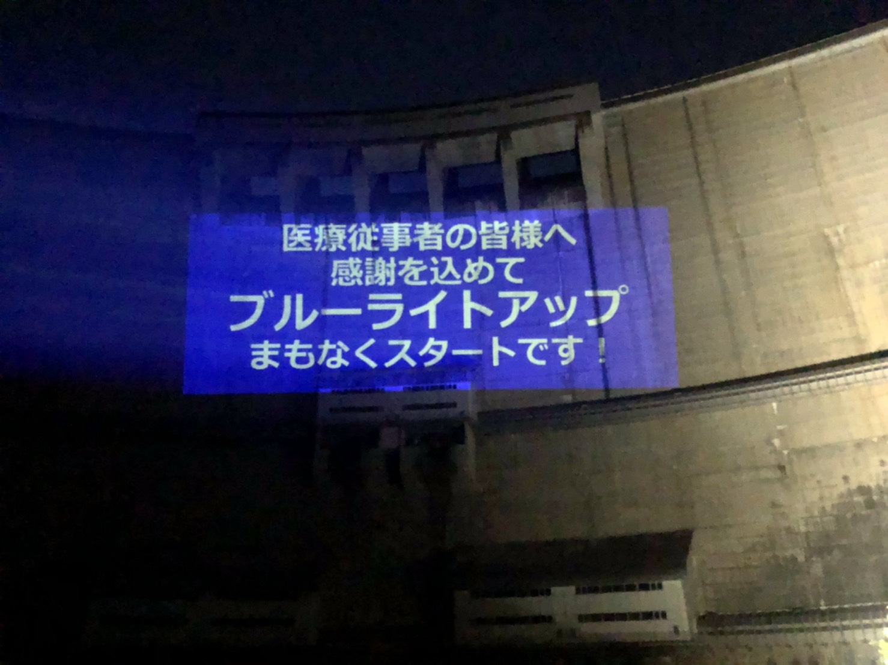
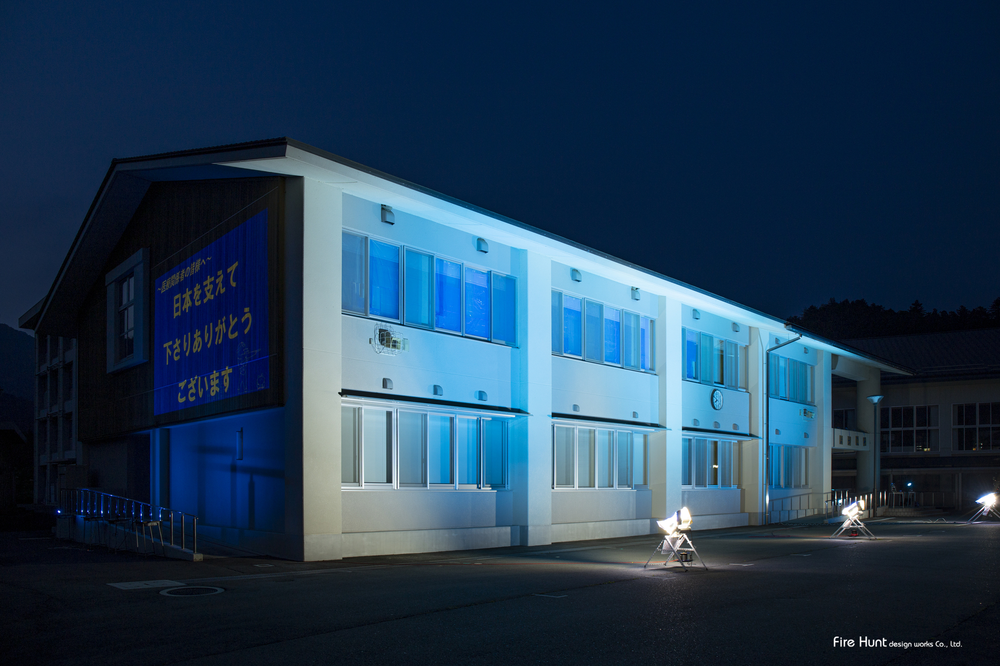

【行動力が高い！】

ブルーライトアップ
私は、6月～8月に学校と温井ダムでブルーライトアップを行いました。私は後輩達を巻きこみ、G Suiteを活用して感謝メッセージを募集し、当日の準備などを手伝ってもらいました。町役場にはご好意で大型LEDライトを無償で貸していただきました。学校が保有していたプロジェクターでは出力が足りないため、EPSON販売に協力をお願いし、無償で高出力のプロジェクターをお借りました。また、SNSで積極的に広報し、Facebookだけで16000件以上の閲覧やエンゲージメントがつきました。この取組は中国新聞とNHKに取材をされ、合わせて５回報道していただきました。

活動風景



【Adobeソフト独学！】
”アフターエフェクト"
- 千と千尋の作画内に湯婆婆が文字を浮かすシーンがあった。私はこのシーンをメッシュ機能などを使って再現できないかどうか模索したところ微弱ではあるが完成した。動画編集などにも興味があるため様々なことに目を向け探究していきたい。
”その他勉強しているAdobeソフト"
- ⇨Adobe Photoshop
- ⇨Adobe Illustrator
- ⇨Adobe Premiere Pro
- ⇨Adobe After Effects
- etc...